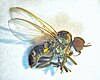

simuliidae

Has synonym(s): black fly
Definition: A black fly or blackfly (sometimes called a buffalo gnat, turkey gnat, or white socks) is any member of the family Simuliidae of the Culicomorpha infraorder. It is related to the Ceratopogonidae, Chironomidae, and Thaumaleidae. Over 2,200 species of black flies have been formally named, of which 15 are extinct. They are divided into two subfamilies: Parasimuliinae contains only one genus and four species; Simuliinae contains all the rest. Over 1,800 of the species belong to the genus Simulium.Most black flies gain nourishment by feeding on the blood of mammals, including humans, although the males feed mainly on nectar. They are usually small, black or gray, with short legs, and antennae. They are a common nuisance for humans, and many U.S. states have programs to suppress the black fly population. They spread several diseases, including river blindness in Africa (Simulium damnosum and S. neavei) and the Americas (S. callidum and S. metallicum in Central America, S. ochraceum in Central and South America).
Source: Wikipedia
Wikipedia Page (Something wrong with this association? Let us know.)
Wikidata Page (Something wrong with this association? Let us know.)